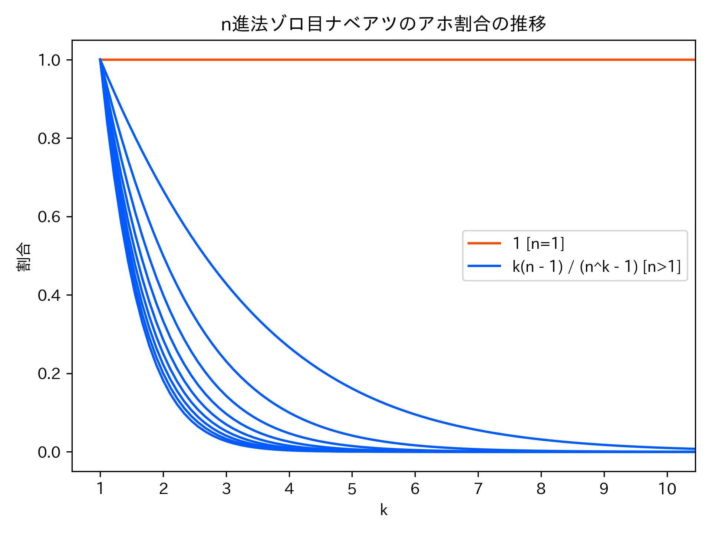

かつて世界のナベアツは、3の倍数と3の付く数字のときだけアホになったといいます。世界のナベアツがひたすらに数を数え続けるとアホになる割合が1に近づいていくというのは有名な話（？）ですが、もしナベアツの生態が「ゾロ目のときだけアホになる」というものだったなら、ナベアツはどのくらいアホになっていたのでしょうか？
本物の世界のナベアツが桁まで数えたときにアホになる割合は、次の式で与えられます（参考：ナベアツ方程式）：この式の値はを無限大に飛ばすとに収束するので、「アホになる割合が1に近づいていく」のだと言える訳です。ではゾロ目のナベアツはどうでしょう。
ゾロ目のときだけアホになるゾロ目ナベアツが、桁の数を数えているときを考えます。桁の数は個あります（先頭の桁はでありえないため）が、そのうちゾロ目の数は個です。実際には桁から桁まで数え上げる訳ですから、総和を取って個の数のうち個がゾロ目であるということになります。前者はとなって、ゾロ目ナベアツがアホになる割合はだということになりました。順当に少ないですね。を無限大に飛ばすとに収束します。各桁での「アホ率」もで与えられるので、どんどん正気を取り戻していくみたいですね。良かったです。
……ところで、このゾロ目ナベアツは10進法の世界に生きています。しかし、並行世界のゾロ目ナベアツは必ずしもそうではありません。正確に言うと、並行世界は可算無限個あり、またゾロ目ナベアツは各世界に一人ずつしかいません。さらに全てのゾロ目ナベアツは相異なる位取りを用いているので、進法を使うゾロ目ナベアツをとして数え上げることができます。今まで見てきた10進法ゾロ目ナベアツはさんだったんですね。ほとんどの並行ゾロ目ナベアツは、桁まで数えたときに各桁の割合でアホになり、累積の割合でアホになることが、先程と同様の計算でわかります。やはり正気になっていってくれるようで嬉しいです。
ここで「ほとんどの並行ゾロ目ナベアツ」といったのは、具体的にはの範囲のです。つまり、だけはこの限りでないということです。1進法が何者かということは考える必要がありますが、ここでは1をN個並べることでNを表す記数法のことだとしておきます。定義されないとするとさんが消滅してしまって悲しいので…… は、1つの数字しか使えない以上、発する数は常にゾロ目になることになります。つまり、常にアホであり続けるということです。それもまた一興ですね。

1進法の定義はともかく、からの推測として、が割合でアホになる存在なのは妥当なことに思えます。がアホになる割合はが大きくなればなるほど速く0に近づいていき、逆にが小さくなるほど収束は遅くなります。その極限が「限りなく収束の遅い」＝いつまでもアホであり続けるなのではないでしょうか？（図を参照）
確かめてみましょう。はで不定形となり、定義されません。そこでを考える訳ですが、数学から離れて久しい私には計算方法がさっぱり思いつきませんでした。そこでGeminiに訊いてみると、「ロピタルの定理からと求まるよ」と教えてくれました。ただ私自身がロピタルの定理を十分理解していないので他の方法を訊ねました。すると次のような証明を与えてくれました：
- とする。
- このときである。
- ところでから
である。- 従ってが得られる。
かしこ〜。美しいですね。思いつける気がしません。ところでGeminiに訊く前に、友人にもメッセージを投げていました。友人が返してくれた証明は次のようなものでした：
かしこ〜。美しいですね。こっちは高三の頃の私だったら思いつけていた気もします。
いずれにせよ、であることがわかりました。従って、1進法ゾロ目ナベアツはの値に関わらず割合でアホになると考えるべきでしょう。やはりさんだけは、アホになり続ける運命から逃れられないようですね……